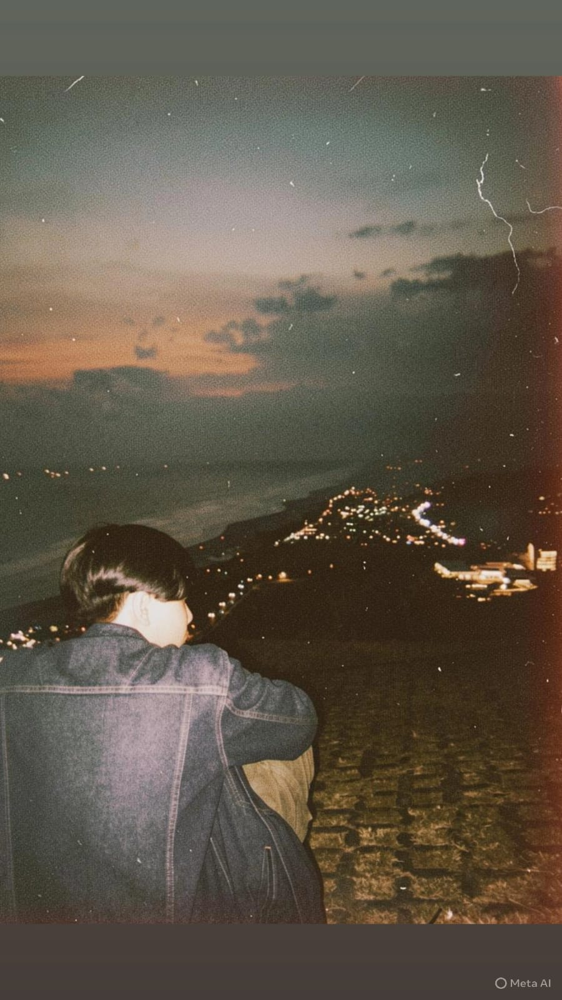

Tentang saya

Saya Raihan, mahasiswa Program Studi Informatika Universitas Islam Indonesia. Saya berasal dari Sleman, Yogyakarta.Saya belajar informatika di UII karena tertarik dalam bidang IT.
| Kegiatan | Peran | Waktu |
|---|---|---|
| Praktikum PABW | Peserta | |
| Membuat project charter MPTI | Peserta | |
| Praktikum P04 — CSS dan Design Token | Peserta |
Karya saya
- expo semester 2 yaitu membuat aplikasi pre order untuk warung indomie, 2026.
- praktikum P04, CSS dan design token, 2026
- expo semester 1 yaitu membuat aplikasi belajar untuk siswa, 2026
Hubungi saya
Isi formulir berikut. Semua kolom bertanda wajib harus diisi.
Tanya jawab
Apa yang sedang saya pelajari?
sedang belajar html dan css
Alat apa yang saya pakai sehari-hari?
VS Code dan Chrome. DevTools saya buka setiap kali mengerjakan tampilan.]
Perjalanan saya
- — Mulai kuliah di UII September 2025
- — Belajar bahasa python di semeseter 1 dan bahasa java di semester 2
- — membangun halaman profil ini.
Keterampilan
- HTML semantik
- Landmark, heading berurutan, tabel data dengan caption dan th scope.
- Git dasar
- add, commit, push, dan sekarang diff, log, serta restore.
- CSS
- Sedang belajar: design token, flexbox, dan tema gelap.